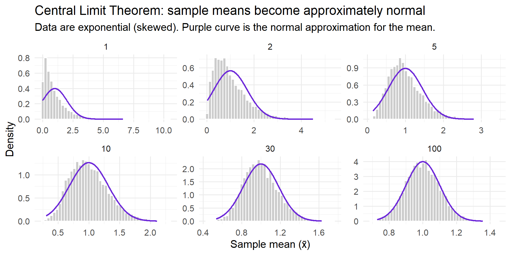

state what “one row” represents (unit of observation)
spot common “messy data” patterns
explain wide vs long (and reshape in R)
join tables using a key, and summarise with groups
Welcome: this is about data, not buttons
In this module, the goal is not “learning menus”.
The goal is learning how to think clearly about data:
What does one row mean?
What does one column mean?
What counts as “missing”?
How do we store repeated measurements?
We’ll use R because it makes data work:
transparent (you can see exactly what you did),
repeatable (you can re-run the same steps tomorrow),
transferable (the same ideas apply to any tool).
The 80–20 rule of data work
A common rule of thumb:
Most time goes into getting data into a usable shape.
What that includes:
designing a sensible table
cleaning and checking values
choosing consistent codes and units
reshaping (wide ↔︎ long)
combining files (joins) and summarising (aggregation)
If this part is done well, everything downstream becomes easier.
What is a dataset?
Think of a dataset as a table:
Rows = observations
Columns = variables
Cells = values
The most important question is:
What does one row represent?
(your unit of observation)
Data constructs
Cross-sectional
Measurements on many units at one point in time.
StudentID
Method
Score
S01
A
78
S02
B
72
Code
# Make rgl render as an htmlwidget in Quarto/HTMLsuppressPackageStartupMessages(library(rgl))rgl::setupKnitr(autoprint =FALSE)# Force a headless rgl device (prevents extra native window/plot)options(rgl.useNULL =TRUE)invisible(try(rgl::close3d(), silent =TRUE))rgl::open3d(useNULL =TRUE)
null
1
Code
rgl::bg3d("white")# --- Dimensions (change these to match your story) ---n_cols <-6# Xn_rows <-5# Yn_time <-10# Z (make it longer than X/Y)# Scale cube so Z is longer (like your diagram)sx <-1sy <-1sz <-2# <-- "time twice as long"# IMPORTANT: rgl::cube3d() is a cube spanning [-1,1] in each axis.# We want our cube to span [0,sx] × [0,sy] × [0,sz] to match the gridlines and axes below.cube <- rgl::cube3d()cube_s <- rgl::scale3d(cube, sx/2, sy/2, sz/2)cube_s <- rgl::translate3d(cube_s, sx/2, sy/2, sz/2)rgl::shade3d(cube_s, color ="#8fa8c8", alpha =0.20)rgl::wire3d(cube_s, color ="#4e627f", lwd =2)# --- Gridlines to suggest "cells" (like a spreadsheet cube) ---# Create evenly spaced grid planes (keep it light)gx <-seq(0, sx, length.out = n_cols)gy <-seq(0, sy, length.out = n_rows)gz <-seq(0, sz, length.out = n_time)# Lines parallel to Z at each (x,y)for (xi in gx) for (yi in gy) { rgl::lines3d(c(xi, xi), c(yi, yi), c(0, sz), color ="gray80")}# Lines parallel to Y at each (x,z)for (xi in gx) for (zi in gz) { rgl::lines3d(c(xi, xi), c(0, sy), c(zi, zi), color ="gray90")}# Lines parallel to X at each (y,z)for (yi in gy) for (zi in gz) { rgl::lines3d(c(0, sx), c(yi, yi), c(zi, zi), color ="gray90")}# --- Axes at the "front" corner (0,0,0) ---# X axis: Columns (front-bottom)rgl::lines3d(c(0, 1.08*sx), c(0, 0), c(0, 0), color ="#2666b8", lwd =4)rgl::text3d(0.55*sx, 0.03*sy, 0.03*sz, "Columns (X)", color ="#2666b8", cex =1.2)# Y axis: Rows (front-left vertical)rgl::lines3d(c(0, 0), c(0, 1.08*sy), c(0, 0), color ="#9342a2", lwd =4)rgl::text3d(0.03*sx, 0.55*sy, 0.03*sz, "Rows (Y)", color ="#9342a2", cex =1.2)# Z axis: Time (depth/up depending on view, but labelled along its axis)rgl::lines3d(c(0, 0), c(0, 0), c(0, 1.08*sz), color ="#37983a", lwd =4)rgl::text3d(0.03*sx, 0.03*sy, 0.85*sz, "Time (Z)", color ="#37983a", cex =1.2)# Nicely framed viewrgl::aspect3d(sx, sy, sz)rgl::view3d(theta =35, phi =20, zoom =0.85)# Render widget (use fixed pixel sizes for knitr/quarto compatibility)rgl::rglwidget(width =900, height =520)
Data constructs
Time series (one unit over time)
Date
SoilMoisture
2025-10-01
22.3
2025-10-08
21.7
2025-10-15
19.8
Key idea: time is a proper column, not hidden in text.
Data constructs
Panel / longitudinal (many units over time)
PlotID
Year
Yield_t_ha
1
1
7.2
1
2
7.8
2
1
5.8
2
2
6.0
Key idea: you’ll have multiple rows per unit.
Variables: what are columns?
Each column should represent one variable.
Common “roles” for variables:
ID / key: labels that identify things (e.g., StudentID, PlotID)
numeric: measurements you calculate with
categorical: group labels (e.g., treatment, method)
date/time
spatial coordinates
Tidy data: the three rules
We’ll use tidy data as a target shape:
Each variable forms one column
Each observation forms one row
Each value forms one cell
It’s not a law. It’s a mental model that prevents avoidable confusion.
Messy example: multiple values in one cell
Plot
Fertiliser
Yield_and_Height
1
FertA
7.2 t/ha; 85 cm
2
FertB
5.8 t/ha; 78 cm
Problems:
one column contains two variables
units are mixed into values
R will treat this as text, and you’ll be forced into manual parsing later
A tidy redesign
Plot
Fertiliser
Yield_t_ha
PlantHeight_cm
1
FertA
7.2
85
2
FertB
5.8
78
What changed:
variables split into separate columns
units moved into column names (or documentation)
each cell contains a single value
Practical (10 min): make a messy table tidy
Work in pairs. Start with this “messy” table and create a tidy version.
Code
# Here is a small demo data table using tibble's tribble function.# What is a tibble? It's a modern version of a data frame, from the 'tibble' package, with cleaner printing and friendlier handling of column types.# What is tribble()? It's short for "transposed tibble" and is a nice way to write out small tables by hand in code.# The ~ (tilde) at the top sets the column names.# Each line after gives the data for one row.messy <- tibble::tribble(~Plot, # Column 1: Plot number (numeric)~Fertiliser_raw, # Column 2: Fertiliser name as raw messy text (character)~Yield_and_Height,# Column 3: Yield and height in a single messy string (character)1, " fert a ", "7.2 t/ha; 85 cm", # Row 12, "FertB", "5.8 t/ha; 78 cm", # Row 23, "A", "7.0 t/ha; 82 cm"# Row 3)# Print the resulting tibblemessy
Your goals:
create Fertiliser with consistent codes (FertA, FertB)
split Yield_and_Height into two numeric columns: Yield_t_ha, PlantHeight_cm
Hint (not the only way):
Code
# Step by step explanation:library(dplyr)tidy1 <- messy |># 1. Clean up the Fertiliser_raw column.# We want to remove extra spaces and ignore upper/lower case,# so that different spellings of the same fertiliser are treated the same.mutate(# Create a new column called FertiliserFertiliser =case_when(# If the cleaned text is "fert a" or just "a",# label it consistently as "FertA"str_to_lower(str_squish(Fertiliser_raw)) %in%c("fert a", "a") ~"FertA",# If the cleaned text matches any of these versions of FertB,# label it as "FertB"str_to_lower(str_squish(Fertiliser_raw)) %in%c("fertb", "fert b", "fertiliser b") ~"FertB",# If it does not match any of the known fertiliser names,# keep the original text unchangedTRUE~ Fertiliser_raw )) |># 3. Split Yield_and_Height column (which looks like "7.2 t/ha; 85 cm") into two columns: Yield_raw and Height_raw (separated at the semicolon).separate(Yield_and_Height, into =c("Yield_raw", "Height_raw"), sep =";") |>mutate(# 4. Pull out the numbers from Yield_raw and Height_raw. So "7.2 t/ha" becomes just 7.2, and "85 cm" becomes 85.Yield_t_ha =parse_number(Yield_raw),PlantHeight_cm =parse_number(Height_raw) ) |># 5. Pick out just the columns we want, in a tidy order.select(Plot, Fertiliser, Yield_t_ha, PlantHeight_cm)tidy1
Formatting & consistency (the hidden enemy)
Even with the right columns, inconsistency causes trouble:
multiple spellings for the same category ("FertA", "fert a", "A")
extra spaces (" FertB" vs "FertB")
mixed date formats (12/10/25, 2025-10-12, "12 Oct 2025")
mixed units in one column
Rule: pick a convention, apply it consistently, document it.
Missing data: how is “nothing” stored?
Missing values are normal.
Bad patterns:
mixing "NA", "N/A", "missing", ".", "—" in the same column
using 0 to mean missing when zero could be real
Good practice in R:
use real missing values: NA
tell import functions what strings should become NA
explain why random steps can create a stable pattern
state the CLT in plain language
connect “Galton’s board” intuition to “sample means become normal”
Galton’s board: chance making a pattern
Drop many balls through pegs:
each bounce is random (left/right)
the sum of many small random steps produces a stable shape
This is a visual bridge to the Central Limit Theorem.
Galton’s board (interactive)
Practical (10 min): explore the Galton board
Use the simulator on the previous slide.
Task A (no bias): set Bias to Right = 0.50, Rows = 6 then 12 then 18.
Drop ~200 balls each time. What happens to the histogram shape?
Task B (add bias): set Rows = 12, Bias = 0.60, drop ~200 balls.
What happens to the centre and the symmetry?
The Central Limit Theorem (CLT): the idea
If you repeatedly take samples of size \(n\) and compute their mean:
the distribution of those means becomes approximately normal as \(n\) grows
even when the original data are not normal
What changes with \(n\):
the centre approaches the population mean \(\mu\)
the spread shrinks like \(\sigma/\sqrt{n}\)
The CLT (clear statement)
Let \(X_1, X_2, \dots, X_n\) be independent draws from a distribution with mean \(\mu\) and standard deviation \(\sigma\) (both finite).
Define the sample mean: \(\bar{X} = \frac{1}{n}\sum_{i=1}^n X_i\)
Then, for large \(n\), \(\bar{X}\) is approximately: \(\bar{X} \sim \mathcal{N}\left(\mu, \frac{\sigma^2}{n}\right)\)
Important: the CLT is about the mean of repeated samples, not about your raw data being bell-shaped.
CLT demo (R): start with a skewed distribution
We’ll sample from an exponential distribution (skewed right), then look at the distribution of sample means.
Code
set.seed(4013)n_sims <-6000ns <-c(1, 2, 5, 10, 30, 100)means <-map_dfr(ns, function(n){tibble(n = n,xbar =replicate(n_sims, mean(rexp(n, rate =1))) )})# For Exponential(rate=1): mu=1, sigma=1, so sd(xbar)=1/sqrt(n)curve_df <- means |>group_by(n) |>summarise(xmin =quantile(xbar, 0.001),xmax =quantile(xbar, 0.999),.groups ="drop" ) |>group_by(n) |>summarise(x =list(seq(xmin, xmax, length.out =250)),.groups ="drop" ) |> tidyr::unnest(x) |>mutate(mu =1,sd =1/sqrt(n),y =dnorm(x, mean = mu, sd = sd) )ggplot(means, aes(x = xbar)) +geom_histogram(aes(y =after_stat(density)), bins =45, fill ="grey80", color ="white") +geom_line(data = curve_df, aes(x = x, y = y), color ="#6D28D9", linewidth =1) +facet_wrap(~ n, scales ="free", ncol =3) +labs(title ="Central Limit Theorem: sample means become approximately normal",subtitle ="Data are exponential (skewed). Purple curve is the normal approximation for the mean.",x ="Sample mean (x̄)",y ="Density" )

Interpreting what you just saw
As \(n\) increases:
the distribution of \(\bar{X}\) becomes more symmetric (more bell-shaped)
it concentrates around the true mean ( \(\mu = 1\) here )
its spread shrinks (roughly proportional to \(1/\sqrt{n}\) )
This is one reason why averages are “stable” even when individual measurements are noisy.
Why are they called “ratio” variables?
A variable is called ratio if it is measured on a scale that has all the properties of interval variables, but also has a meaningful zero point—meaning zero really means “none” of whatever is measured. This allows us to meaningfully calculate ratios between values (e.g., \(10\,\text{kg}\) is twice as heavy as \(5\,\text{kg}\)). Because both differences and ratios are interpretable, we call these “ratio” scales. Examples include height, weight, time since a fixed point, and length.
Linking Galton’s board to the CLT
On Galton’s board:
each ball takes many small random left/right steps
the final position is the sum of those steps
Sums (and averages) of many small independent random influences tend to create:
a predictable centre
a predictable spread
and often a bell-shaped distribution
That’s the core intuition behind the CLT.
Section 3: Data types + measurement
In this section we separate two ideas:
how R stores a column (numeric / character / factor / ordered / Date)
what the values mean (continuous / interval / ordinal / categorical)
The second idea determines what summaries and comparisons make sense.
Data types in R (storage types)
R stores columns as types like:
numeric / integer: measurements, counts
character: text
factor: categorical values (levels)
ordered factor: ordinal categories with a known order
logical: TRUE / FALSE
Date / POSIXct: dates and date-times
Storage type is not the same as measurement scale, but they should agree.
Quick type check in R
Code
df |>glimpse()
What you’re looking for:
IDs stored as character (often!)
dates stored as Date, not character
numeric columns that are accidentally character because of messy entries
Measurement scale: what operations are meaningful?
Four common scale labels we’ll use:
Categorical (nominal): labels only (no order)
Ordinal: ordered categories (gaps not equal/known)
Interval: equal spacing, but zero is arbitrary (e.g., °C)
Continuous (ratio): equal spacing + meaningful zero (e.g., height, mass)
These determine what summaries are sensible.
Categorical (nominal)
Properties
categories/labels only
no inherent ordering
Good summaries
counts, proportions
bar charts
Examples
treatment group (Control, FertA, FertB)
species (oak, pine, birch)
Ordinal
Properties
categories have an order
distances between levels are not known to be equal
They are called ratio variables because their scale has a true, meaningful zero — a value representing the complete absence of the measured quantity.
This means you can compare values by making ratios: 20 kg really is twice as much as 10 kg, and 0 kg truly means “none.”
Unlike intervals (where zero is arbitrary), on a ratio scale, both differences and proportions (ratios) make sense. This is why height, mass, and time are all “ratio” variables: you can say one object is twice as long, or half as heavy, as another.
Properties
equally spaced
meaningful zero (“none of the quantity”)
ratios make sense (20 kg is twice 10 kg)
Good summaries
mean/SD, median/IQR, histograms, scatterplots
Examples
height (cm), mass (kg), duration (seconds), distance (m)
Practical (10 min): classify and encode measurement scales
In pairs, classify each variable as categorical / ordinal / interval / continuous. Then encode it appropriately in R.